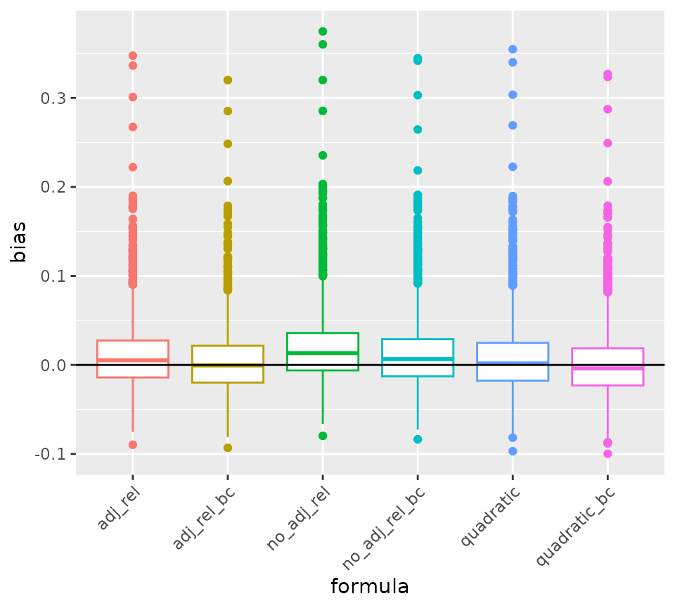

Reliability of Factor Scores
Yixiao Li, Winnie Tse, Mark Lai
2024-09-06
reliability.RmdIn this vignette, we explore analytically the reliability of factor scores, and evaluate them using simulated data.
## This is lavaan 0.6-18
## lavaan is FREE software! Please report any bugs.Analytic Formula for Factor Scores
Theoretical Values
aka, using true parameter values to compute weights
From a unidimensional factor model , for factor scores of the form
where we set = 0 so that = , the theoretical reliability formula of factor scores, assuming no sampling errors in the weights is given by
assuming that we set .
Sample Estimators
When factor scores are computed using sample estimates of and , we have = , and
where
- = vector of estimated weights of length
- = vector of true weights of length ,
- = vector of observed scores of length ,
- = vector of factor loadings of length ,
- = latent variable,
- = vector of measurement errors of length ,
- = = variance-covariance matrix of errors,
- = number of items.
If we assume that and are independent, and , , , , then using law of total variance,
So, accounting for sampling error,
The sample estimates can be obtained by substituting in the sample estimates of and and using the corresponding form of .
Empirical Example
Regression Factor Scores
# Three items from the classic Holzinger and Swineford (1939) data
cfa_fit <- cfa("
visual =~ x1 + x2 + x3
",
data = HolzingerSwineford1939,
std.lv = TRUE
)
# Uncorrected reliability of regression factor scores
fsr <- lavPredict(cfa_fit, fsm = TRUE, acov = TRUE)
attr(fsr, "fsm")[[1]] %*% lavInspect(cfa_fit, what = "est")$lambda## visual
## visual 0.6598382## visual
## visual 0.6605848
# Corrected reliability of regression factor scores
get_a <- function(lambda, theta) {
solve(tcrossprod(lambda) + theta, lambda)
}
lam <- lavInspect(cfa_fit, what = "est")$lambda
th <- lavInspect(cfa_fit, what = "est")$theta
jac_a <- lavaan::lav_func_jacobian_complex(
\(x) get_a(x[1:3], diag(x[4:6])),
x = c(lam, diag(th))
)
# Estimated sampling variance of weights
va <- jac_a %*% vcov(cfa_fit)[1:6, 1:6] %*% t(jac_a)
aa <- tcrossprod(get_a(lam, th)) + va
sum(diag(tcrossprod(lam) %*% aa)) /
sum(diag(cfa_fit@implied$cov[[1]] %*% aa))## [1] 0.64774
# Or using `get_fs_lavaan`
get_fs_lavaan(cfa_fit, reliability = TRUE) |>
attr(which = "reliability")## [1] 0.64774Bartlett Factor Scores
# Uncorrected reliability of Bartlett factor scores
fsb <- lavPredict(cfa_fit, method = "Bartlett", fsm = TRUE, acov = TRUE)
1 / (1 + attr(fsb, "acov")[[1]])## visual
## visual 0.6598382## visual
## visual 0.6609684
# Corrected reliability of regression factor scores
get_a <- function(lambda, theta) {
thinv_lam <- solve(theta, lambda)
solve(crossprod(lambda, thinv_lam), t(thinv_lam))
}
lam <- lavInspect(cfa_fit, what = "est")$lambda
th <- lavInspect(cfa_fit, what = "est")$theta
jac_a <- lavaan::lav_func_jacobian_complex(
\(x) get_a(x[1:3], diag(x[4:6])),
x = c(lam, diag(th))
)
# Estimated sampling variance of weights
va <- jac_a %*% vcov(cfa_fit)[1:6, 1:6] %*% t(jac_a)
aa <- tcrossprod(t(get_a(lam, th))) + va
sum(diag(tcrossprod(lam) %*% aa)) /
sum(diag(cfa_fit@implied$cov[[1]] %*% aa))## [1] 0.6477805
# Or using `get_fs_lavaan` (need to be fixed)
R2spa::get_fs_lavaan(cfa_fit, method = "Bartlett", reliability = TRUE) |>
attr(which = "reliability")## [1] 0.6477805Multiple-group example
mod <- "
visual =~ x1 + x2 + x3
"
get_fs(HolzingerSwineford1939, model = mod, group = "school",
reliability = TRUE, std.lv = TRUE, method = "regression") |>
attr(which = "reliability")## $Pasteur
## [1] 0.6473336
##
## $`Grant-White`
## [1] 0.6789831
##
## $overall
## [1] 0.66258
get_fs(HolzingerSwineford1939, model = mod, group = "school",
reliability = TRUE, std.lv = TRUE, method = "Bartlett") |>
attr(which = "reliability")## $Pasteur
## [1] 0.6474885
##
## $`Grant-White`
## [1] 0.6790979
##
## $overall
## [1] 0.6627156Simulations
set.seed(2356)
lambda <- seq(.3, .9, length.out = 6)
theta <- 1 - lambda^2
num_obs <- 100
num_sims <- 2000
out <- matrix(ncol = 7, nrow = num_sims)
# Copy function for computing a
get_a <- function(lambda, theta) {
solve(tcrossprod(lambda) + theta, lambda)
}
# Function for getting all versions
all_rel <- function(lam, th, vc) {
sigma <- tcrossprod(lam) + th
ahat <- crossprod(lam, solve(sigma))
# Formula 1: no adjustment
rel1 <- ahat %*% lam
jac_a <- lavaan::lav_func_jacobian_complex(
function(x, p) {
get_a(x[seq_len(p)], theta = diag(x[-(seq_len(p))]))
},
x = c(lam, diag(th)),
p = length(lam)
)
va <- jac_a %*% vc %*% t(jac_a)
aa <- crossprod(ahat) + va
# Formula 2: adjust for both error in weights and true variances
rel2 <- sum(diag(tcrossprod(lam) %*% aa)) / sum(diag(sigma %*% aa))
ev_fs <- sum(diag(th %*% aa))
# Formula 3: solve quadratic equation with adjusted error
rel3 <- (1 + sqrt(1 - 4 * ev_fs)) / 2
c(rel1, rel2, rel3)
}
# Function for getting all bias-corrected versions
all_bc_rel <- function(fit, nsim = 500) {
vc <- vcov(fit)
mc_sim <- MASS::mvrnorm(nsim, mu = coef(fit), Sigma = vc)
mc_rel <- apply(mc_sim, MARGIN = 1,
FUN = function(x) {
all_rel(x[1:6], th = diag(x[7:12]), vc = vc)
})
2 * with(
lavInspect(fit, what = "est"),
all_rel(lambda, th = theta, vc = vc)
) - rowMeans(mc_rel) # bias-corrected
}
for (i in seq_len(num_sims)) {
eta <- rnorm(num_obs)
err <- matrix(
rnorm(num_obs * length(lambda), sd = sqrt(theta)),
ncol = num_obs
)
y <- t(
tcrossprod(lambda, eta) + err
)
# Run cfa
fit <- cfa("f =~ y1 + y2 + y3 + y4 + y5 + y6",
data = data.frame(y) |> setNames(paste0("y", seq_along(lambda))),
std.lv = TRUE
)
pars_fit <- lavInspect(fit, what = "est")
tilde_eta <- lavPredict(fit, fsm = TRUE)
true_rel <- cor(tilde_eta, eta)^2
est_a <- attr(tilde_eta, "fsm")[[1]]
out[i, ] <- c(
true_rel,
all_rel(pars_fit$lambda, pars_fit$theta, vcov(fit)),
all_bc_rel(fit)
)
setTxtProgressBar(
txtProgressBar(min = 0, max = num_sims, style = 3, width = 50, char = "="),
i
)
}
colnames(out) <- c("true_rel", "no_adj_rel", "adj_rel", "quadratic",
"no_adj_rel_bc", "adj_rel_bc", "quadratic_bc")
# save the file
saveRDS(out, "vignettes/sim_results_reliability.RDS")
# Mean bias
out <- readRDS("sim_results_reliability.RDS")
data.frame(
Type = c("no_adj_rel", "adj_rel", "quadratic",
"no_adj_rel_bc", "adj_rel_bc", "quadratic_bc"),
Raw_Biases = c(mean(out[, "no_adj_rel"] - out[, "true_rel"]),
mean(out[, "adj_rel"] - out[, "true_rel"]),
mean(out[, "quadratic"] - out[, "true_rel"]),
mean(out[, "no_adj_rel_bc"] - out[, "true_rel"]),
mean(out[, "adj_rel_bc"] - out[, "true_rel"]),
mean(out[, "quadratic_bc"] - out[, "true_rel"], na.rm = TRUE))
) |>
knitr::kable(digits = 3)| Type | Raw_Biases |
|---|---|
| no_adj_rel | 0.019 |
| adj_rel | 0.011 |
| quadratic | 0.008 |
| no_adj_rel_bc | 0.012 |
| adj_rel_bc | 0.005 |
| quadratic_bc | 0.001 |
# RMSE:
data.frame(
Type = c("no_adj_rel", "adj_rel", "quadratic",
"no_adj_rel_bc", "adj_rel_bc", "quadratic_bc"),
RMSE = c(sqrt(mean((out[, "no_adj_rel"] - out[, "true_rel"])^2)),
sqrt(mean((out[, "adj_rel"] - out[, "true_rel"])^2)),
sqrt(mean((out[, "quadratic"] - out[, "true_rel"])^2)),
sqrt(mean((out[, "no_adj_rel_bc"] - out[, "true_rel"])^2)),
sqrt(mean((out[, "adj_rel_bc"] - out[, "true_rel"])^2)),
sqrt(mean((out[, "quadratic_bc"] - out[, "true_rel"])^2,
na.rm = TRUE)))
) |>
knitr::kable(digits = 3)| Type | RMSE |
|---|---|
| no_adj_rel | 0.046 |
| adj_rel | 0.042 |
| quadratic | 0.042 |
| no_adj_rel_bc | 0.042 |
| adj_rel_bc | 0.040 |
| quadratic_bc | 0.040 |
# Boxplot to compare the bias across formula
bias_tab <- as.data.frame(out[, -1] - out[, 1]) |>
pivot_longer(everything(), names_to = "formula", values_to = "bias")
bias_tab |>
ggplot(aes(x = formula, y = bias, col = formula)) +
geom_boxplot() +
geom_hline(yintercept = 0) +
theme(legend.position = "none",
axis.text.x = element_text(angle = 45, hjust = 1))## Warning: Removed 6 rows containing non-finite outside the scale range
## (`stat_boxplot()`).